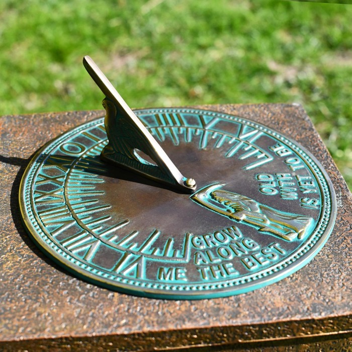
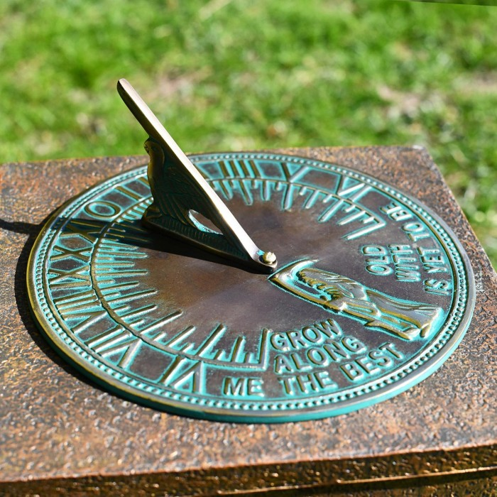
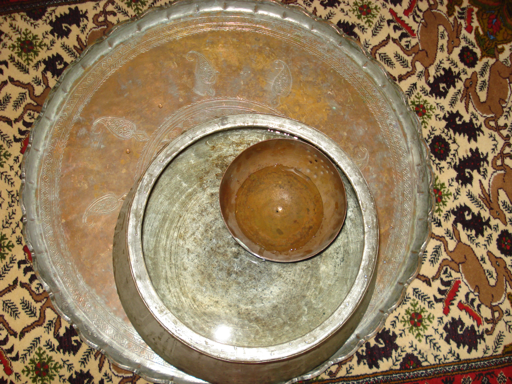
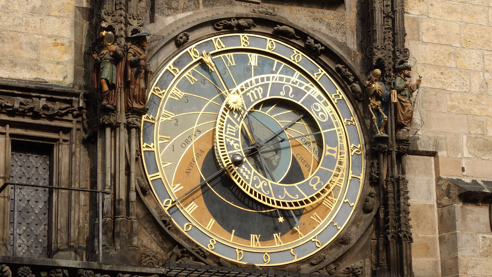
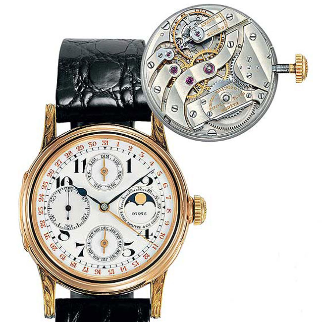
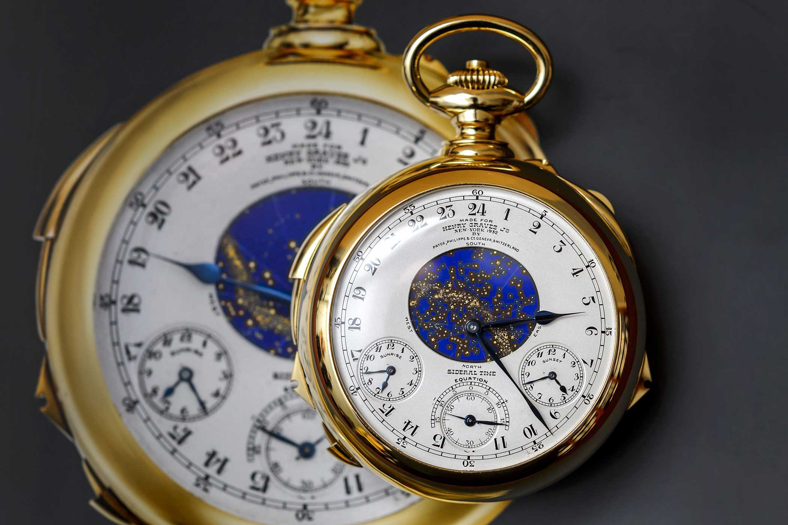
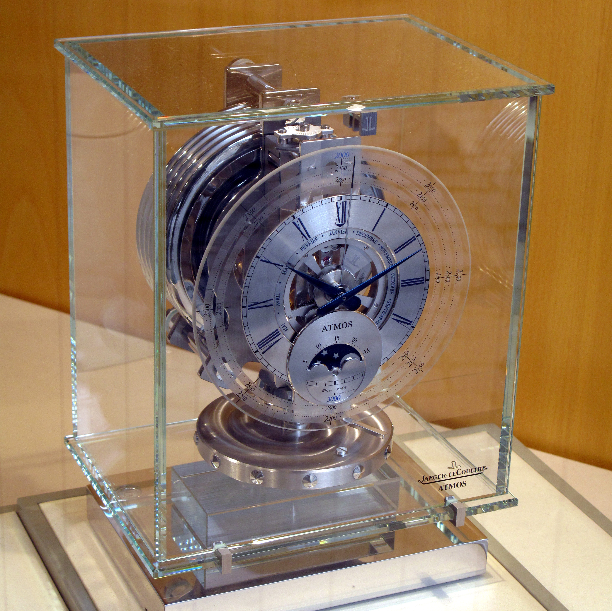
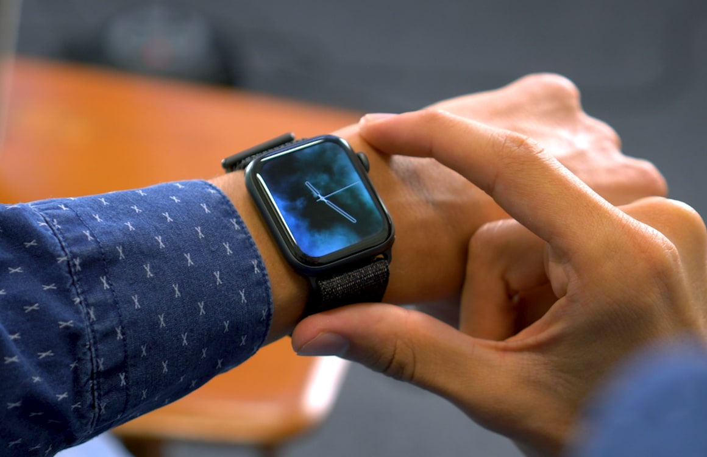

Oudste zonnewijzer
1500 v.Chr
Sinds het oude Egypte gebruikte men een zonnewijzer om de tijd te bepalen aan de hand van de zon, schaduw en een wijzer. Afhankelijk van de positie van de zon en de schaduw van de wijzer kun je de tijd aflezen.
1500 v.Chr
Sinds het oude Egypte gebruikte men een zonnewijzer om de tijd te bepalen aan de hand van de zon, schaduw en een wijzer. Afhankelijk van de positie van de zon en de schaduw van de wijzer kun je de tijd aflezen.
300 v.Chr
Dit uurwerk bestaat uit een reservoir die de toevoer en afvoer regelde om de veranderde hoogte van de waterspiegel te meten.
1000
Aan de hand van een astronomisch uurwerk kan je de gegevens lezen zoals de stand van de maan, zon en sterrenbeelden.
1338
De opvolger van de waterklok. Aan de hand van twee symmetrische glazen bollen met daar tussen een nauwe opening waar de zand door zwaartekracht naar beneden valt. De tijdsduur van een zandloper wordt beïnvloed door verschillende factoren zoals de hoeveelheid zand, grootte van de twee glazen bollen en de grootte van de opening.
1571
Eerst gedragen door vrouwen, sinds de twintigste eeuw wordt het ook gedragen door mannen. In oorlogen werd een polshorloge gebruikt om speciale manoeuvres uit te voeren.
1675
Een horloge die aan een jas vast zit die vaak in een zak zat om te voorkomen dat de horloge gaat vallen. Mannen hadden vaak een zakhorloge en vrouwen een polshorloge.
1879
Een atomische klok is een klok die tijd meet aan de hand van de trillingen van atomen. De frequentie van deze trilling is constant en onafhankelijk van de omgeving.
2015
Een polshorloge die niet alleen tijd aanduidt, maar ook andere functies zoals het lezen van je hartslag en je zuurstofgehalte in je bloed. Binnen een smartwatch is worden er geen machines componenten gebruikt, maar sensoren en andere technologieën.
